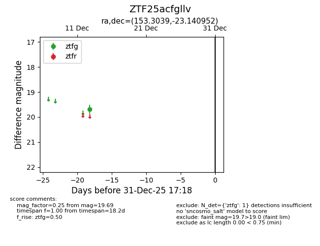
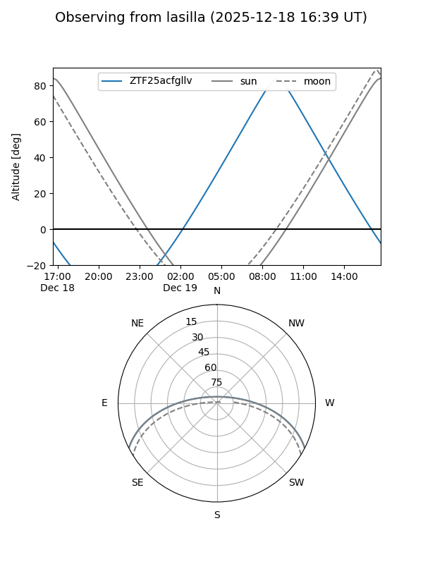
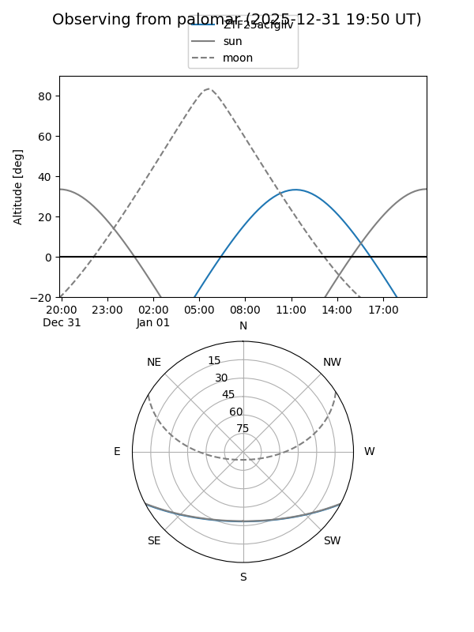

ZTF25acfgllv
Target ZTF25acfgllv at 2025-12-18 11:18
Aliases and brokers:
FINK: fink-portal.org/ZTF25acfgllv
Lasair: lasair-ztf.lsst.ac.uk/objects/ZTF25acfgllv
ALeRCE: alerce.online/object/ZTF25acfgllv
alt names
ZTF25acfgllv (ztf,fink_ztf)
Coordinates:
equatorial (ra, dec) = 153.3039,-23.14095
equatorial (HMS+DMS) = 10:13:12.95,-23:08:27.43
galactic (l, b) = (261.9066,+26.85785)
Photometry
last ztfg=19.69
1 ztfg detections
Lightcurve

Visibility


Additional plots